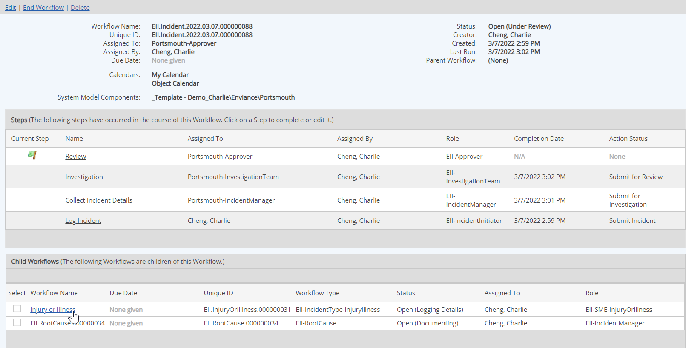
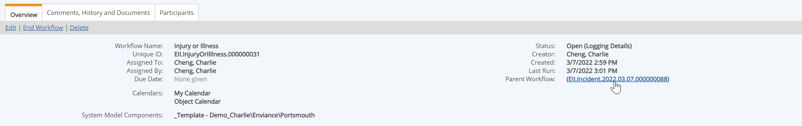

Once a child workflow has been created, the Workflow Overview for the parent workflow will show all child workflows associated with it. If you have the appropriate permission for the child workflow, you can navigate to the child workflow via the link.

The Workflow Overview for the child workflow also shows the associated parent, if any, with a link to the parent (depending on permissions).
